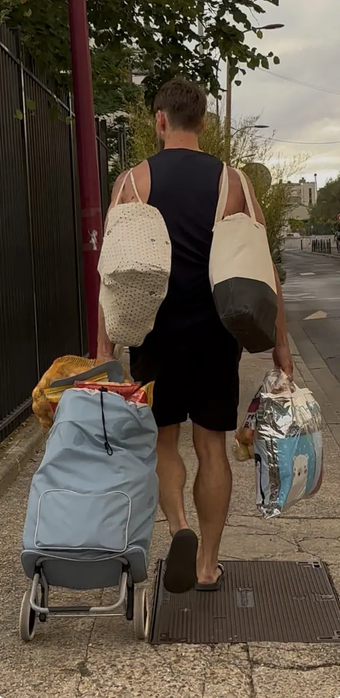
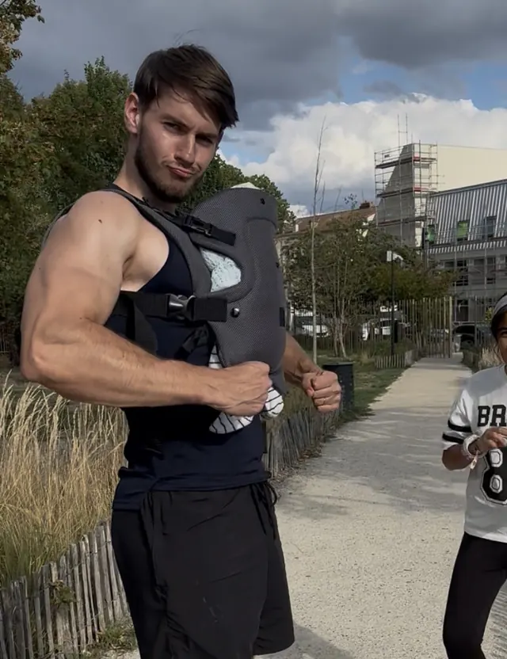
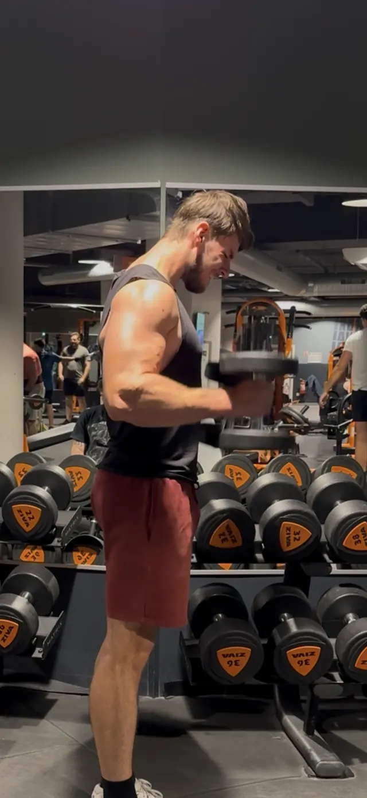
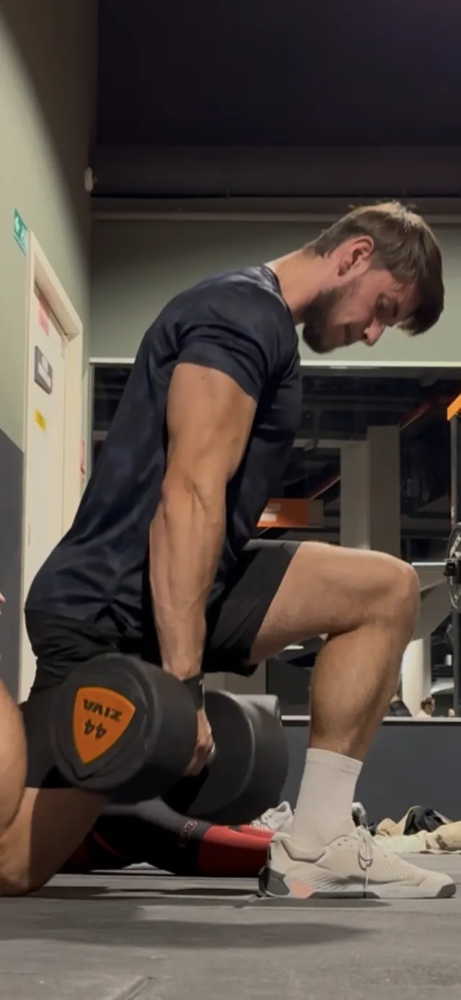
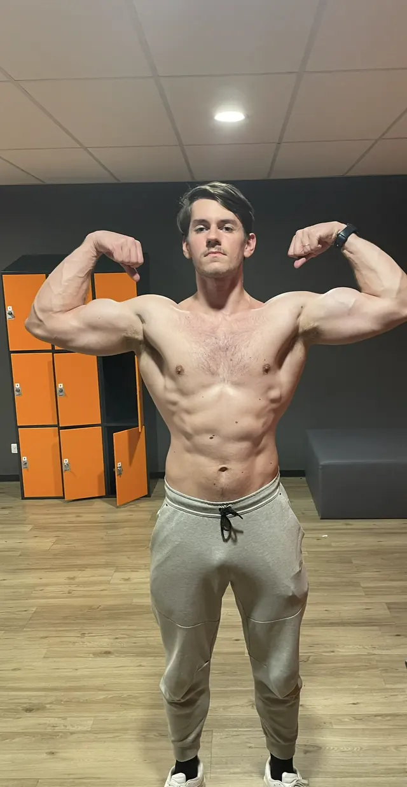

Lire le guide « 3H qui changent tout »
Pour comprendre comment bien utiliser trois heures par semaine, et commencer seul dès ce soir.
Recevoir le guideJe coache les hommes de 30 à 45 ans qui ont un travail, une famille, et qui ont déjà essayé de se remettre en forme sans que ça tienne. Ici, pas de régime ni de programme copié-collé : un plan qui rentre dans ta vraie semaine.

Pas de promesse chiffrée ici — ce que ça change concrètement quand le cadre tient, et comment on y arrive.
Le réveil est plus dur qu'avant, même après une bonne nuit. Le corps a changé sans que tu t'en rendes vraiment compte : le ventre, le dos qui tire, le souffle qui manque dans les escaliers.
Au travail, toute l'énergie part avant le soir. Le sport, quand il reste du temps, c'est la première chose qu'on sacrifie.
Tu as déjà essayé — salle, régime strict, appli de fitness — et ça a tenu quelques semaines, avant de s'arrêter comme d'habitude. Tu ne sais plus si c'est le programme, le manque de temps, ou toi.
Pas de transformation miracle : des capacités qui reviennent, une semaine après l'autre.

Porter les courses sans faire deux voyages, soulever un carton, déplacer un meuble seul. La force, ici, ce n'est pas pour la photo : elle sert tous les jours.
Le rôle de père et d'homme du foyer demande de l'énergie, pas seulement de la présence. Porter, rassurer, tenir le rythme d'une famille sans s'écrouler le soir.



Avoir encore de quoi lire une histoire, jouer, être vraiment là le soir, plutôt que de t'effondrer sur le canapé en rentrant.
Pas de régime strict ni d'aliments interdits. Un mode de vie que tu peux tenir au restaurant, en famille, sans tout recalculer : on ajuste les quantités, pas ta vie sociale.
Sec, musclé, fort. Un physique qui se construit semaine après semaine, avec des charges qui montent et des séances notées — pas en un mois, et sans y laisser ta vie sociale.




Entre cette situation et celle-là, il n'y a pas de raccourci miracle. Il y a un cadre qui tient dans le temps — c'est l'objet de mon suivi.
Le manque de temps n'est pas ton problème. Ce qui manque, c'est un plan qui utilise bien le peu de temps que tu as. Trois séances d'une heure, placées là où ta vie le permet, suffisent pour devenir plus fort et plus sec, si elles sont bien construites.
Des coachs, il y en a partout. Voici ce que tu auras avec moi, et que tu ne trouveras pas forcément ailleurs.
J'ai développé TB my Coach : ton programme, ton carnet de séances, ton plan alimentaire, tes bilans et nos échanges au même endroit. Je vois tes charges réelles et j'ajuste à partir de là.
Ton plan se construit autour des plats que tu manges déjà, au restaurant, en famille, au bureau. Rien n'est interdit : on organise les quantités.
Je ne garantis aucun chiffre, parce que ta progression dépend de ton sommeil, de ta régularité et de ta vie. Je te garantis un cadre solide, ajusté chaque semaine, et la vérité sur où tu en es.

✓ Avec moiJe m'entraîne en force toutes les semaines : 200 kg au soulevé de terre, tractions avec 55 kg à la ceinture. Je sais ce que coûte la progression, et je sais comment l'obtenir sans y passer ta vie.
Diplômé STAPS, je m'appuie sur des principes d'entraînement reconnus : surcharge progressive, volume adapté, récupération. Pas sur la tendance du moment.
Des hommes occupés, avec un travail et une famille. Leurs chiffres, avec leur accord.
Une charpente, c'est ce qui fait tenir la maison quand tout le reste bouge. La méthode repose sur quatre poutres, travaillées ensemble pendant tout le cycle.
Un entraînement en force progressif, trois fois par semaine, que tu notes séance après séance.
Perdre le ventre en gardant ta force, avec une alimentation que tu peux tenir en famille.
Un corps qui sert au quotidien : porter tes enfants, bouger sans douleur, avoir de l'énergie le soir.
Des habitudes simples qui restent après le coaching, pour ne plus repartir de zéro.
Selon où tu en es, et ce que tu veux maintenant.
Pour comprendre comment bien utiliser trois heures par semaine, et commencer seul dès ce soir.
Recevoir le guideUn appel court pour faire le point sur ta situation. Si je ne suis pas la bonne personne pour t'aider, je te le dis.
Réserver un appelLe cycle complet : programme, alimentation et suivi chaque semaine dans l'app.
790 €
Jusqu'au 31 décembre 2026, 10 places restantes sur 10. 1 600 € en 2027.
1 600 €
Le cycle de 12 semaines.